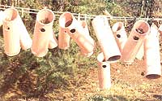
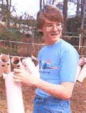
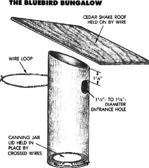

MOTHER knows that many youths undertake interesting, original projects and also start their own small businesses. To support these endeavors, we buy and publish well-written articles from children and teenagers concerning their efforts. However, we recommend that all young authors query (that is, send us a letter telling about the story they'd like to do) before writing a full article. Send your queries to MOTHER's Children, Mother Earth News, P. O. Box 70, Hendersonville, NC 28793.
"You're going to make and put up 100 bluebird houses?" my dad asked. "Sure you aren't biting off more than you can chew?" I'd been reading about how the number of eastern bluebirds had dropped over the last 25 years-mostly because they didn't have enough good places to nest. So, as part of my community service requirement for the Eagle Scout award, I wanted to help these beautiful songbirds survive. And I figured I could get help from the other scouts in my troop. But Dad had a point. It had taken me a couple of hours (and cost me a couple of dollars for materials) to make just one regular wooden birdhouse. Multiply that by 100, and I was facing an overwhelming job. There was only one thing for me to do-invent a better bluebird house!
To get some ideas, I called on Dr. Bill Fletcher, a retired local veterinarian who has been making birdhouses for over 50 years. One interesting house he had was made out of the thick cardboard that carpeting is rolled around. I liked that idea, and got several rolls from carpet stores (for free, when the owners learned about my project).
Using a table saw, we scouts cut each tube into two-foot lengths. We cut each of these sections in half at a 20° slant to make two tubular nest boxes with straight bottoms and slanting tops.
Then, using an electric drill with a doorknob corer, we bored entry holes. To discourage other bird species from using the houses, we made the holes between 1'/a" and 13/a" in diameter and located them 1'/a" from the top edge of each tube at the front.
Next we drilled two small holes in the back of each house and threaded a wire loop through them for hanging the tube.
Now we had to treat the cardboard tubes to keep rain from ruining them. Dr. Fletcher had dipped his birdhouses in exterior polyurethane varnish. His tubes were a lovely wood-colored brown, but polyurethane is expensive. So I decided to paint our houses and asked the manager of a local building supply store if he would donate some paint to our project. I was so pleased when he did that I didn't even worry about the color of the paint he gave me... until I got home and found out that it was pink!
I got a lot of good-natured grumbling from my scout friends about that, especially after their hands and clothes got pink from giving all those tubes two coats of paint. (The tubes eventually weathered to a nice salmony color.) We hung them from my mom's clothesline to dry.
Dr. Fletcher used plywood circles for the tops and bottoms of his tube birdhouses. But sawing and painting enough of those for 100 houses would have been a tremendous job. I decided to use cedar shakes (roofing shingles), and a roofing supply company gladly gave me enough broken ones to use for my project.
I didn't know what to do for the nest floors. Then my mom had an inspiration-use the lids (the disks that fit inside the screw bands) of large-mouth canning jars! To hold them in place, we threaded lightweight wire through holes drilled near the bottoms of the tubes and then dropped the lids in (see illustration for details). We used more wire to hold the cedar roofs in place.
Now that the houses were made, how could we get bluebirds to nest in them? I talked to a wildlife extension agent who told me the best time to put up bluebird houses is in late winter or early spring. The birds prefer relatively open areas such as fields, meadows, and orchards, or the edges between fields and forests. They don't like tall undergrowth under their nests, but they do like having a tree, a large shrub, or a fence within fluttering distance (25 to 100 feet) for their fledglings.
We made our bluebird trail along the nature trails of nearby Sandy Creek Park. That made it easier to take care of the houses.
That's right, bluebird houses do need regular care. The birds can raise three broods of youngsters a year, but you have to clean out each old nest before the adults will make a new one. (Clean the houses each winter, as well.) You may also need to repair a house that a squirrel or raccoon has chewed.
Most especially, you have to evict house sparrows. Those aggressive little birds will drive bluebirds right out of their homes. Most songbirds are strictly protected by law, but house sparrows are classified as pests, so you can get rid of any if you like-or just check your birdhouses once a week and remove any house sparrow nests. (To discourage the sparrows from ever using the houses, set them up only three to five feet off the ground . . . and definitely not near people's houses.)
I hope you, too, will want to aid these little songbirds. A lot of effort is needed to help them survive, and we are the ones who can make the difference!
I should also mention that several people who saw our houses asked if they might buy one. A bunch of kids in your scout troop, school class, or other group might be able to sell many of these easy-to-make, inexpensive houses. If you decide to do so, keep your price reasonable and include an information sheet with each house to tell people how to set up and care for them. That's both good business for you and an act of kindness for the birds.
|
PHOTOGRAPHS ; ROBERT W. MATTHEWS |
 |
 |
|
 |
|
|